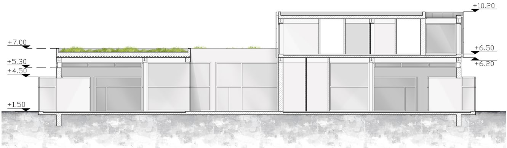
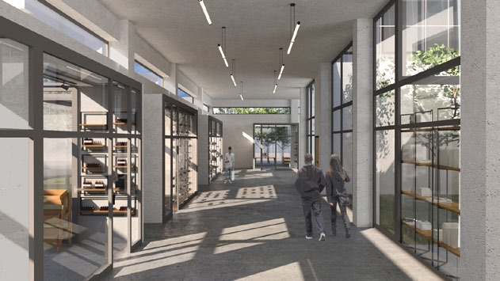
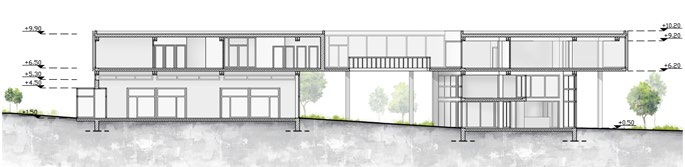
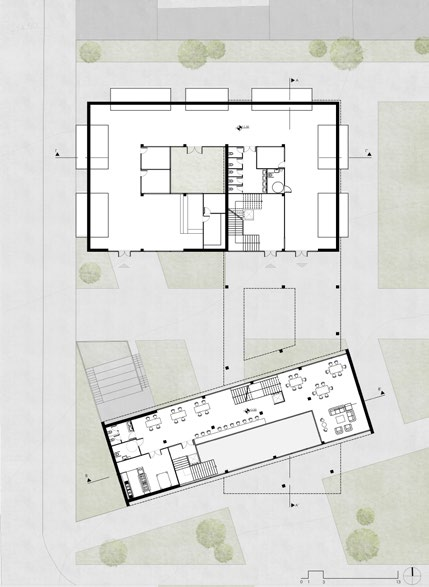
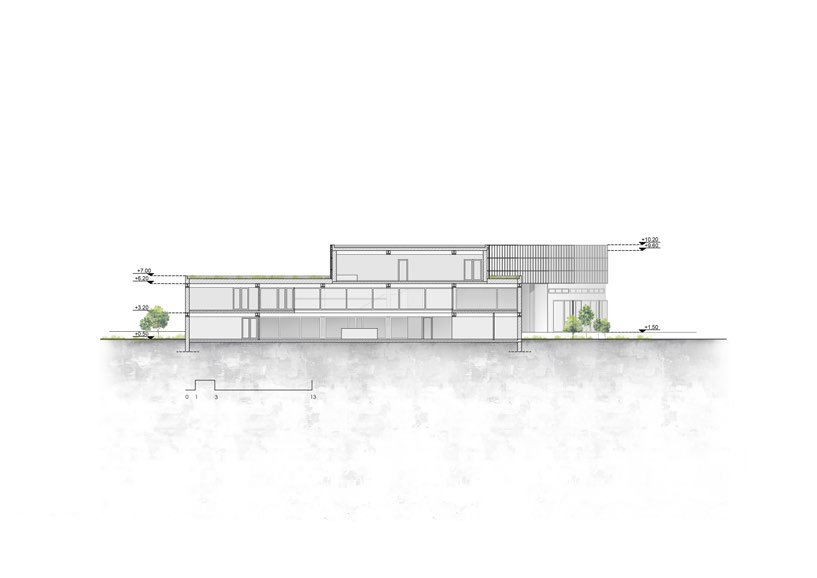
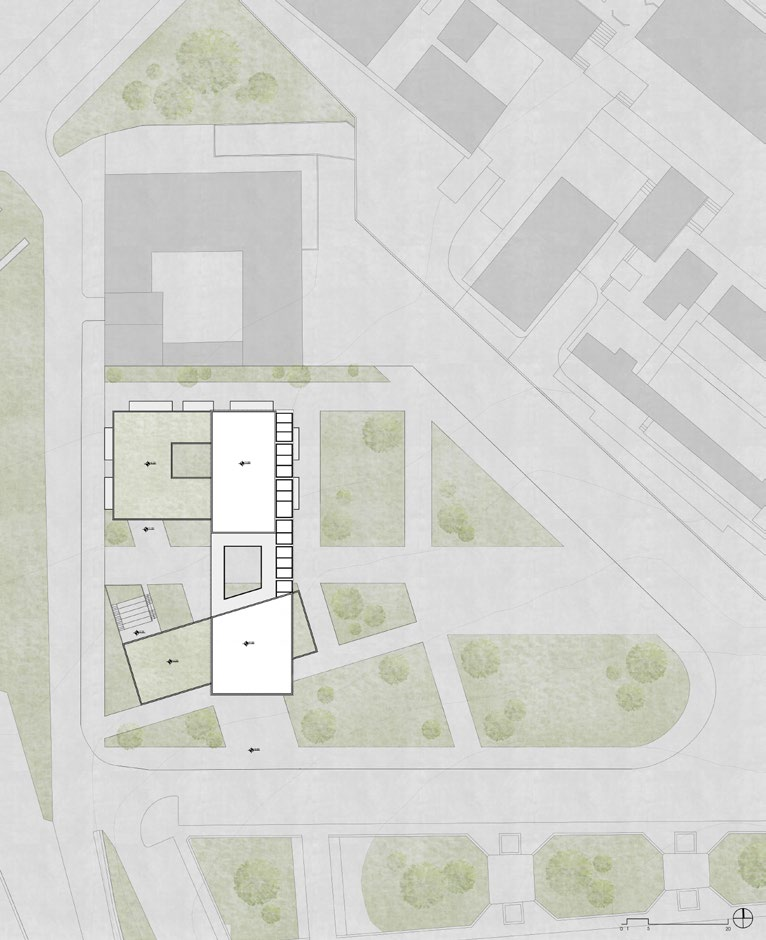

Xanthi City Pavilion
Xanthi, Greece
A cultural centre in the marketplace area of Xanthi, comprising three volumes — two on the ground level aligned with the topography, and a third functioning as a bridge. The design emphasizes fluidity, transparency of movement, and a central public square with an open-air cinema.
The proposal aims to rejuvenate the area through the establishment of a Cultural Centre, envisioned as an attraction for diverse age groups and a catalyst for economic, touristic and cultural development.
The design and arrangement of the volumes emphasize fluidity in all directions. Transparency of movement within and through the buildings was central to the concept, creating a clear and accessible flow across the site. A covered walkway extends from west to east, linking the plaza to a large green area across from the university campus.
The ground floor includes a Citizens Service Centre, information points, internet access zones, offices, a city exhibition, showrooms, and a small bar. The next level features a catering hall. The northern section houses showrooms, pavilions, adaptable workshops and studios, a café, and support spaces. The third volume is dedicated to guest rooms, baths, and a multi-purpose hall connected by an outdoor bridge.
The concrete structure is enclosed in a flat framework — a claustra — with both transparent and semi-transparent glass cladding for visual interest and light control. The building is constructed with a composite system featuring metal beams and HP steel bearing columns encased in concrete.




